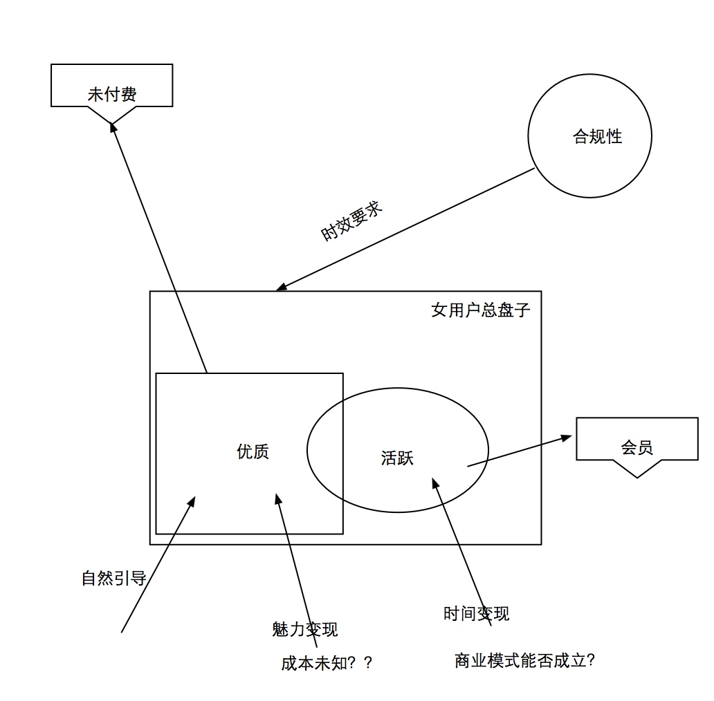

项目代号：阿波罗 Apollo
项目目的
建立起全新的基于生态大循环的新一代产品原型，大幅度提升产品在市场的竞争力。 同时，建立起女性用户侧同渠道的联动标准（优质女用户K值）。
生态结构图
整套大循环的方案重点解决以下三个问题：
- 升级客户端主流玩法 （以富媒体为主要载体）
- 通盘合规性 （通过促进女性用户活跃盘活大循环）
- 同步考虑会员价值和权益
建立全新的组织，从女性用户需求的角度，建立针对女用户的全套流程及策略，促进其活跃。打通同男用户之间的循环，以构建陌生人交友的生态。
女性用户运营的主要目标是要维持一个女性用户池子，池子分为时间粒度，地域粒度，活跃度浓度，优质资料用户比例。
优质资料用户数量 & 活跃度浓度（如果动态资料能大幅度刺激付费的话） 由A面（男性用户） 输出目标
总数量、时间粒度（多长时间登陆）、地域粒度、活跃度浓度 由合规化给出目标。
参考数据：
有缘网女性
6.5w 登录 1w 新增注册
微信 微信单独的 1w登录 3k新增
solr 里有女性53万，有头像的42万， 15天登陆过的。
全站数据：
注册：64万（其中女：7万）
登录（不包括注册）：181万（其中女 15万）
会员登录： 30万
需要注意的
1. 服务器
2. 客服，裁图
A面（男用户侧）：
让用户一眼能看懂的逻辑：
配对---会话（互动）
配对---互动----会话
解决问题：真实性、富媒体内容
下周五 粗保证原型 AB面碰
B面（女用户侧）

潜在风险点
A测：
动态的方式会不会降低策略强度？
B测：
活跃女性用户盘子目标 和 手段的匹配性
成本是多少？？
输出： 未付费男的 付费动机
优质资料
交互授权
活跃行为
输入：
优质男
虚荣/乐趣
魅力/时间变现
目标： 优质（活跃）女数量 与（优质女费用）的合成
产出 ！！！！！优质女的K值！！！！！！！！
组织架构
A面
运营： 王楠、张海娟、翟秋香、刘丽丽
产品： 杨华、徐文涛、马昊天、于佳鑫、张思雨、朱海梁
B面
严欣、程远炜
赵安庆： 赵利伟
吕思明： 刘颖慧、徐博威
研发
滕新年：
前端 5
后端 7
运维 1
测试 1
UI 3